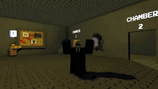

Classic Sandbox takes inspiration from Garry's Mod and obviously it has a classic look to it. You can play around with the Magna Gun and Reality Rewriter along with some Roblox weapons! Many items are taken from the tool box so if you're the rightful owner and would like your items taken out PLEASE contact me
Play Here WikiClassic Sandbox Ad
Classic Sandbox is currently in Alpha as of September 3rd, 2025. Developed and maintained by Shutter Shade Studios, it continues to grow with updates and community contributions.
Fun Facts ➤
- It used to be called Sqishdum's Mod up until the development of the Mcbloxys map, when it was changed to Classic Sandbox. .
- Earlier on instead of using classic models or making my own, sqish (me) dragged shit straight from the toolbox meaning that maps consisted of higher quality models rather than blockier ones, but I did change all of them (I'm pretty sure)
Compatibility ^
- PC (Fully Supported)
- Mobile/Tablet (Limited Support)
- Console (No Support)
- VR (Are you crazy?)
Changelog ^
I genuinely have zero clue what to put here
Extra Requirements:
- Roblox account (RIP guests)
- Internet connection
- Coolness
Check out and see what the maps look like!
Meet the different characters of Classic Sandbox!
Explore the various tools and gadgets available.